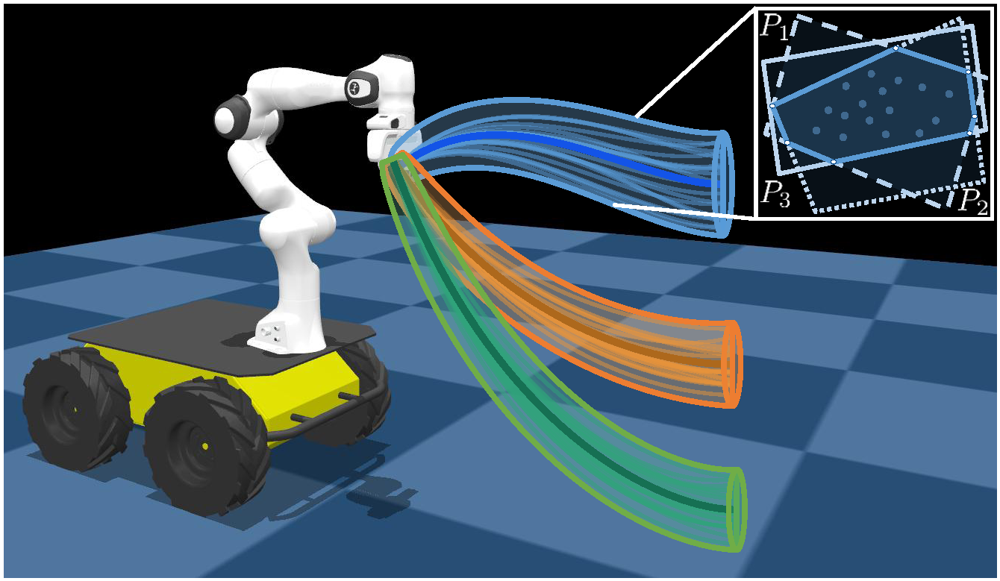
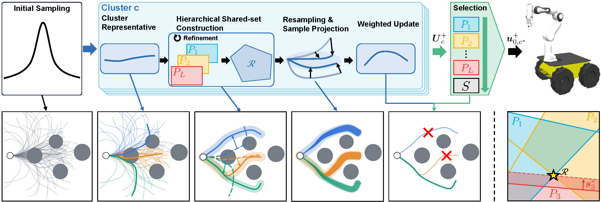
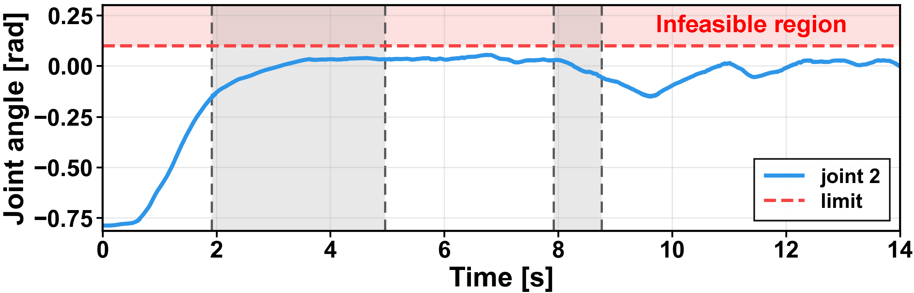
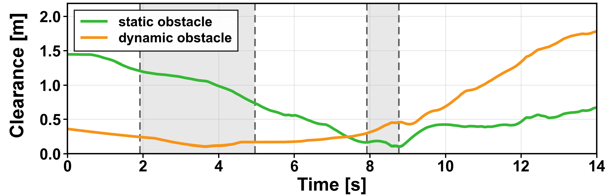
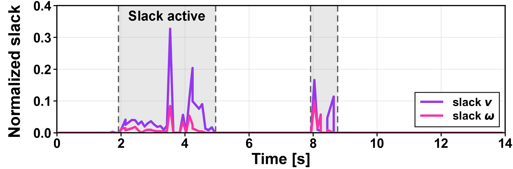

01
Initial sampling
Sample control sequences around the nominal sequence and partition them with k-means.
Resolving conflicting constraints by priority while keeping each cluster-wise MPPI update inside a hierarchy-determined shared convex set.
Conventional MPPI commonly handles constraints through penalty terms, motivating recent approaches that enforce constraints more explicitly. However, multiple constraints may not be simultaneously satisfiable, and constraint handling at the individual-sample level does not generally ensure constraint preservation through the importance-weighted update. We propose Hierarchical Projection MPPI (HiP-MPPI), which handles conflicting constraints according to prescribed priorities using hierarchical shared convex sets. HiP-MPPI first clusters sampled control sequences to identify distinct sampled regions. For each region, hierarchical shared convex set construction and representative projection are iterated to move the linearization point toward the hierarchy-determined shared set and reduce the linearization error associated with the initial representative. New samples are then generated around the refined representative and projected onto the corresponding shared set. By convexity, each cluster-wise MPPI weighted update remains within the same set without requiring post-update correction. Simulation and real-robot experiments show that HiP-MPPI yields priority-dependent constraint relaxation and corresponding robot motions across diverse tasks.
Individual rollout correction does not, by itself, guarantee that the importance-weighted MPPI update will preserve the same constraints. HiP-MPPI instead builds a cluster-wise hierarchical shared convex set and performs the weighted update inside it.
Maintain several locally represented candidate regions, resolve constraint conflicts through hierarchy-aware slack, and preserve the resulting bounds through the MPPI convex combination.

The algorithm alternates between local shared-set construction and representative refinement, then resamples and projects controls before the cluster-wise MPPI update.

Sample control sequences around the nominal sequence and partition them with k-means.
Select the medoid of each cluster as a local representative in control-sequence space.
Construct priority levels with HQP and refine the representative to reduce local linearization error.
Generate samples around the refined representative and project them onto the shared convex set.
Compute the cluster-wise MPPI weighted update, then select candidates by constraint priority and cost.
The experiments test quantitative baseline performance, hierarchical relaxation in whole-body control, and priority-dependent behavior on a physical robot.
A constrained navigation task with four priorities: control-input limits, collision avoidance, 2 m/s speed tracking, and centerline-band keeping.
Representative racetrack failure case for standard MPPI.
Representative racetrack failure case for Shield-MPPI.
Representative racetrack failure case for CSC-MPPI.
Representative racetrack failure case for QP-MPPI.
Our method resolves the conflict according to the prescribed hierarchy and completes the racetrack task.
Table II · 20 trials × 3 laps
| Method | K | Executed trajectory | Sampled rollouts | Final plan | Comp. time [ms] |
|||||||
|---|---|---|---|---|---|---|---|---|---|---|---|---|
| Success [%] |
P3 [m/s] |
P4 Viol. [%] |
P1 Viol. [%] |
P1 Max. (Δv/Δω) |
P2 Collision [%] |
P2 Collision Max. [m] |
P2 Margin [%] |
P1 [%] |
P2 [%] |
|||
| MPPI | 100 | 55 | 1.844 ± 0.480 | 12.80 | 2.281 | 1.352/1.448 | 36.418 | 1.1365 | 45.173 | 0.000 | 3.667 | 2.6 ± 0.6 |
| 30 | 0 | 1.652 ± 0.616 | 22.96 | 6.863 | 1.494/1.680 | 43.764 | 2.1182 | 52.314 | 0.757 | 6.268 | 2.5 ± 0.3 | |
| Shield-MPPI | 100 | 40 | 1.775 ± 0.554 | 19.21 | 3.345 | 1.732/1.444 | 35.775 | 1.1909 | 43.846 | 0.357 | 0.071 | 4.7 ± 2.8 |
| 30 | 0 | 1.430 ± 0.731 | 36.97 | 11.607 | 1.463/2.048 | 42.750 | 1.0280 | 52.073 | 1.997 | 0.388 | 5.2 ± 4.2 | |
| CSC-MPPI | 100 | 95 | 1.997 ± 0.115 | 7.53 | 0.761 | 0.349/3.264 | 1.289 | 1.6906 | 1.367 | 0.008 | 4.131 | 28.6 ± 28.9 |
| 30 | 50 | 1.861 ± 0.411 | 21.60 | 0.683 | 0.278/2.388 | 1.167 | 1.8799 | 1.255 | 0.061 | 3.030 | 25.0 ± 26.3 | |
| QP-MPPI | 100 | 0 | 1.980 ± 0.090 | 3.91 | 22.515 | 2.016/1.767 | 29.376 | 1.1478 | 32.880 | 7.911 | 29.778 | 55.9 ± 3.0 |
| 30 | 0 | 1.983 ± 0.088 | 4.17 | 22.511 | 0.309/1.142 | 29.358 | 0.5491 | 32.845 | 9.139 | 31.854 | 52.9 ± 2.3 | |
| HiP-MPPI | 100 | 100 | 2.000 ± 0.009 | 4.06 | 0.029 | 0.003/0.007 | 0.003 | 0.0080 | 0.028 | 0.000 | 0.000 | 85.4 ± 4.2 |
| 30 | 100 | 2.000 ± 0.010 | 4.31 | 0.034 | 0.003/0.005 | 0.006 | 0.0094 | 0.057 | 0.000 | 0.000 | 81.1 ± 4.3 | |
Full paper table reproduced here for the project page. It expands on wide screens; on narrow screens, swipe horizontally to inspect all metrics.
A Husky mobile base with a 7-DoF Franka arm reaches for an object while handling a joint limit, a moving obstacle, a static obstacle, and a preference to suppress base motion.
Use the full experiment video instead of the snapshot sequence from the paper.
Arm motion alone can no longer satisfy the higher-priority joint-limit and obstacle constraints while keeping the base fixed, so P4 is relaxed and the mobile base begins to move.
As clearance to the static obstacle decreases, the hierarchy again activates P4 slack and allows additional base motion.



A 7-DoF Franka manipulator transports a grasped bottle around a spherical obstacle. Swapping the priority between bottle tilt and end-effector height produces different motions for the same task.
The robot relaxes end-effector height and passes above the obstacle while keeping the bottle close to upright.
The robot maintains the height constraint and relaxes the lower-priority bottle-tilt constraint to pass around the obstacle.
HiP-MPPI directly expresses the desired constraint trade-off through the hierarchy rather than relying on penalty-weight tuning.
HiP-MPPI combines hierarchical constraint resolution with convex-set preservation of cluster-wise MPPI updates. Across navigation, whole-body mobile manipulation, and hardware experiments, lower-priority constraints are relaxed only when needed to protect higher-priority decisions.
Hierarchical shared convex sets resolve conflicts. Representative refinement improves the local approximation. Projection + convex combination preserves the shared set through the MPPI update.
Parameter slots are intentionally left as placeholders so the final project-page values can be filled in after the experimental configuration is frozen.
Shared controller / sampling / projection settings.
| Parameter | Racetrack | Tabletop | Real robot | Notes |
|---|---|---|---|---|
| Prediction horizon, T | TODO | TODO | TODO | TODO |
| Control period, Δt | TODO | TODO | TODO | TODO |
| Sampling budget, K | TODO | TODO | TODO | TODO |
| Number of clusters, M | TODO | TODO | TODO | TODO |
| Refinement iterations, R | TODO | TODO | TODO | TODO |
| Temperature, λ | TODO | TODO | TODO | TODO |
| Initial covariance, Σinit | TODO | TODO | TODO | TODO |
| Resampling covariance, Σres | TODO | TODO | TODO | TODO |
| Trust-region width, Δ | TODO | TODO | TODO | TODO |
| Projection weight, W | TODO | TODO | TODO | TODO |
| Linearization margins, {mi} | TODO | TODO | TODO | TODO |
| Priority tolerances, {δℓ} | TODO | TODO | TODO | TODO |
Add task costs, constraint bounds, solver settings, hardware details, or any additional implementation notes here.
| Experiment | Parameter / setting | Value | Notes |
|---|---|---|---|
| Racetrack | TODO | TODO | TODO |
| Racetrack | TODO | TODO | TODO |
| Tabletop | TODO | TODO | TODO |
| Tabletop | TODO | TODO | TODO |
| Real robot | TODO | TODO | TODO |
| Real robot | TODO | TODO | TODO |